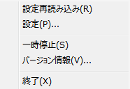
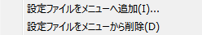
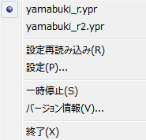

タスクトレイ
・アイコン
カラーのアイコンがタスクトレイに表示されているときは、キーの入れ替えが有効になっています。
アイコンがモノクロになっているときは、キーの入れ替えはしていません。
・ダブルクリック
トレイアイコンをダブルクリックすると、設定ダイアログが出ます。
・メニュー

設定再読み込み
iniファイルと設定ファイルと配列定義ファイルを再び読み込みます。
設定
設定ダイアログを開きます。
設定ファイルの選択
使用する設定ファイルを選択します。
一時停止
キーの入れ替えを一時停止します。
一時停止状態から復帰するときに、設定を再読み込みします。
バージョン情報
バージョン情報ダイアログを開きます。
終了
アプリケーションを終了します。
右クリック

メニュー上の右クリックメニューから、設定ファイルを選択するための項目を追加したり削除したりできます。
・設定ファイルの選択

設定ファイルを複数用意しメニューに登録することで、簡単に設定を切り替えることができます。
10個まで登録できます。